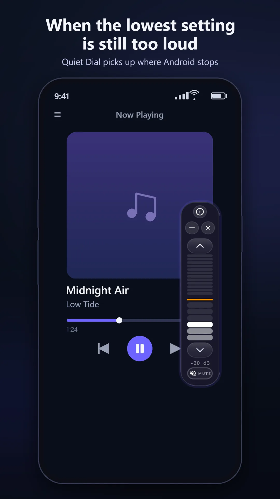
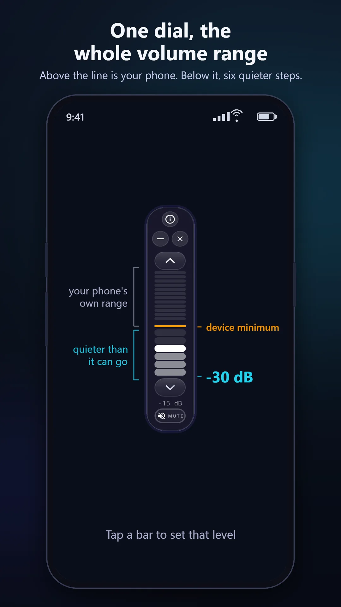
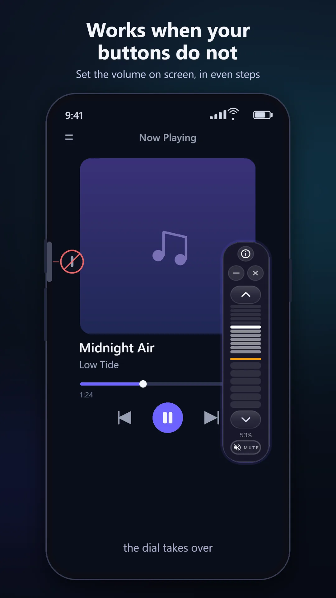
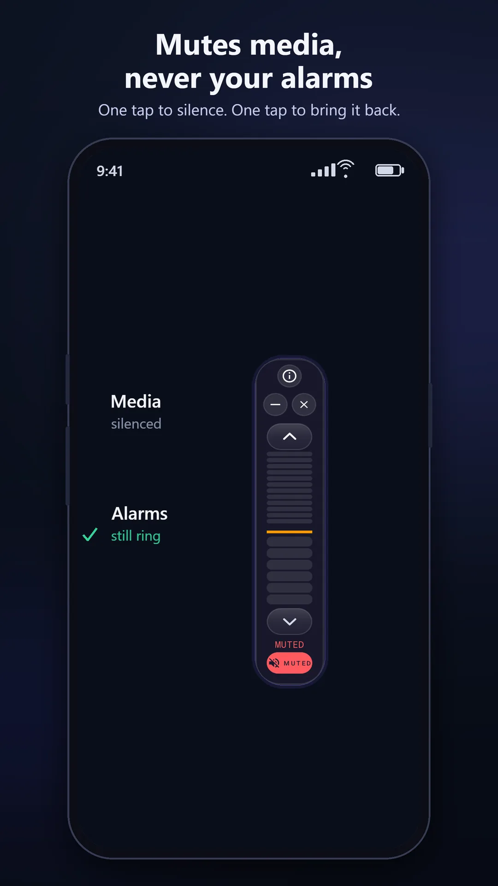
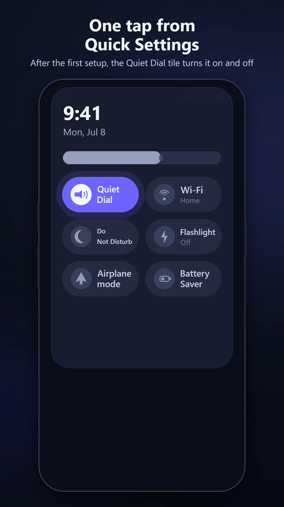

See it, and hear it
Watch Android's own slider run out of room, then watch the dial keep going below it. The audio in the video drops with every step on screen.
When the lowest setting is still too loud
The first notch above mute can be too much for a quiet room, a sleeping baby, or a sensitive pair of headphones, on a phone or a tablet. Android will not go lower. Quiet Dial does, on both.
Quieter than minimum
Fine volume steps beneath the lowest hardware step, for when even the minimum is too much.
The whole range on screen
Above the device-minimum line the slider sets normal system volume, so it stands in for worn or broken volume buttons. Even 5 dB steps on speaker and wired; on Bluetooth it follows your device's real hardware steps, so every bar is audible.
Mutes media, not alarms
One tap silences media and leaves the alarm volume where it was. The quiet steps do lower alarms too, so test your level before a morning you cannot miss.
Phones and tablets alike
On some tablets the lowest volume is even louder than on a phone, depending on the model. Quiet Dial works exactly the same way on both.
A floating volume control
It floats over any app. Drag it anywhere, tuck it to an edge, close it with one tap.
No takeover
Your buttons and the system panel keep working. The dial sits on top as an overlay and controls only the level.
Quick Settings tile
Swipe down, tap once. Toggle the control on or off from your notification shade without opening the app.
Private by design
No ads, no tracking, no account, no network access. Open source under GPL-3.0.
Made for quiet moments
The volume you reach for at night, on a phone or a tablet.
Sleep and white noise
Keep lullabies and white noise barely audible next to a sleeping baby.
Sensitive headphones
For IEMs and bone conduction where even a few percent is too strong.
Late night listening
A podcast or audiobook to fall asleep to, without waking anyone beside you.
Quiet rooms
A library, a quiet office, meditation, or anywhere that needs calm.
Sensitive ears
Quieter levels than the minimum for sensitive hearing. A comfort utility, not a medical device.
Tablet speakers
Tablet speakers and headphones, where on some models the minimum step is even louder than on a phone.
Guides for a specific problem
Free fixes first, on each page, then where the dial helps.
Samsung Galaxy too loud
Galaxy phone, tablet, or Buds still too loud at the lowest step, when Sound Assistant doesn't help.
Samsung Sound Assistant
What its finer steps fix, and the one thing they cannot.
Earbuds too loud
When even the lowest Bluetooth step is still too loud in your ears.
USB-C and wired earphones
In-ear monitors and adapters too loud on the first step.
Disable absolute volume
Where the Bluetooth switch is, what it changes, and why it resets.
Calls too loud
Which calls an app can lower and which it cannot: regular phone calls stay at the phone's own lowest step, app calls get quieter on some phones.
Already tried everything?
Limiter apps, EQ presets, fine-step tools, Normalize Volume, none of it moved the floor. Here's why, and what does.
Pixel calls too loud
Check the hearing aid setting first, then the in-call floor itself.
Xiaomi, Redmi, POCO
HyperOS settings to try, and how to go below the first step.
OnePlus
OxygenOS settings to try when the first step is too loud.
Alarm too loud
The alarm slider is on step one and still jolts you awake. Also covers ringtones and notifications. Keyboard and touch sounds cannot be lowered by any app.
Why the floor exists
The lowest step is a decision in Android's audio mixer, not a fault in your phone. Where the limit comes from, and what can move it.
How quiet is -30 dB?
What each quiet step leaves of the sound, in plain numbers.
Tablet too loud
An Android tablet still too loud at the last step before mute, at bedtime, with white noise or late at night.
Volume buttons not working
Stuck, stiff or dead volume keys. The free fixes first, then a slider on screen that stands in for them.
See it
Swipe through.





One slider, the whole range
Most volume apps make things louder or rebuild your whole audio system. Quiet Dial covers your normal range and then keeps going where they stop: below the minimum.
What people say
Five-star reviews from people who installed Quiet Dial from Google Play.
finally! I needed something to limit the volume and finally this offered an option that works. I paid for it immediately. Thank you for saving my hearing and sanity!
Does exactly what I needed it to (Lowers minimum volume). Haven't had any issues so far. Huge thanks to dev
thank you so much. phones must have this in system. i blocked the holes with my finger for years. […]
just what I was looking ,easy to use,transparent when ontop,and folds away to the side when not needed. works awesome!!
I've been looking for an app exactly like this for ages - I'VE FINALLY FOUND IT!!!
Works like a charm for my Nothing Phone 3a, seems quite new as UI keeps improving and changing. Supposedly data safe and open source which is nice. […]
best app for sound especially with this new update and with no ads. this app is heavily underrated
What a great app! I really needed this. 10/10!!!
Quoted as written on Google Play; translated reviews use Google Play's own translation. Read every review on Google Play
Questions
- Do I need root or a computer?
- No. No root, no ADB and no computer. Install it from Google Play, open it once and allow it to display over other apps.
- Does it work with Bluetooth headphones and speakers?
- The quiet steps apply over Bluetooth as well as on the speaker. On a small number of phone and headphone combinations they have no effect over Bluetooth, although they work on the speaker. The seven days with everything open are the time to check yours.
- Does it lower phone calls?
- Calls in apps such as WhatsApp, yes. Regular calls over the mobile network, no: Android carries them on a separate path that runs no audio effects, so no app can lower them below the phone's own minimum.
- Does the floating dial get in the way?
- Android has no setting below its lowest step, so going lower takes a control of its own on screen. You can fold the dial into a small tab at the edge of the screen: the quiet level stays, your volume buttons keep working, and a Quick Settings tile turns the control on and off.
- What does it collect?
- Nothing. The app has no internet permission at all, no ads, no account and no tracking. The source code is public under GPL-3.0.
- Does it work on tablets?
- Yes, on Android phones and tablets alike, from Android 9.
More in Help.
Get the volume you were missing, on your phone or tablet
After you install, open it once and allow it to display over other apps. That is the entire setup. Everything is open for seven days; after that the dial needs one payment, once, inside the app. No subscription.